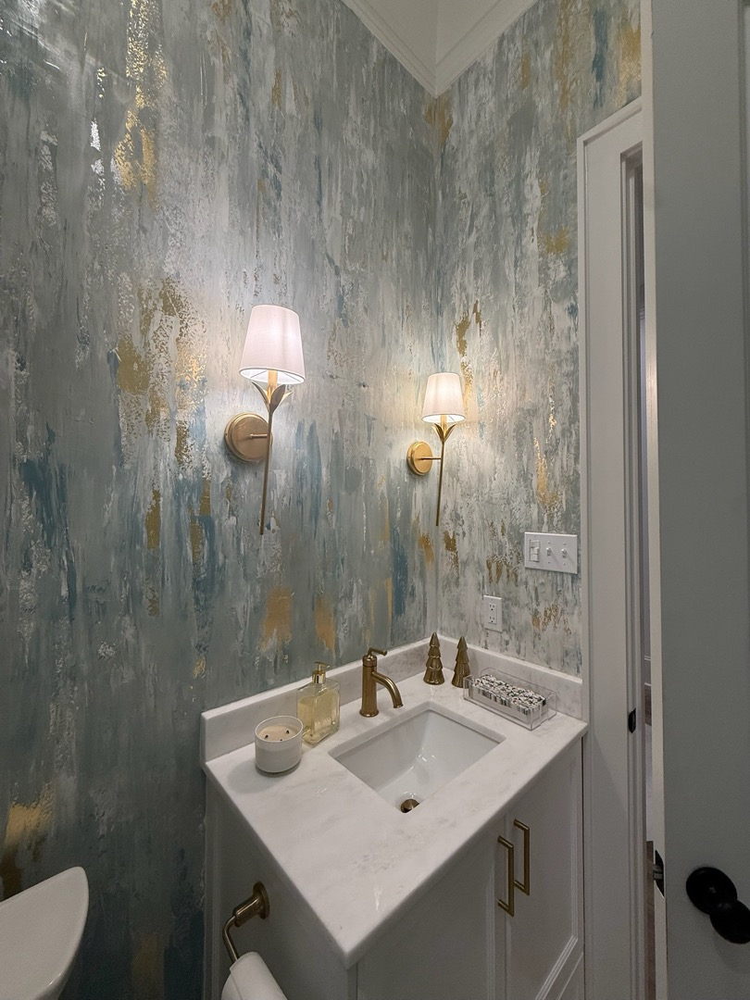
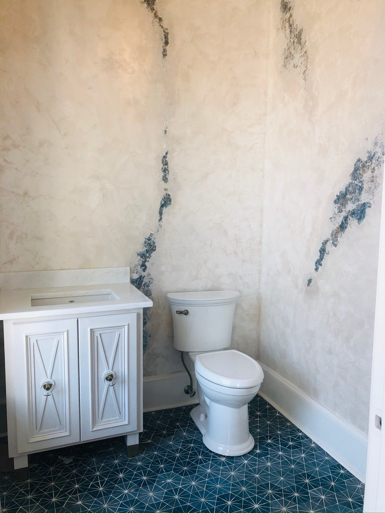
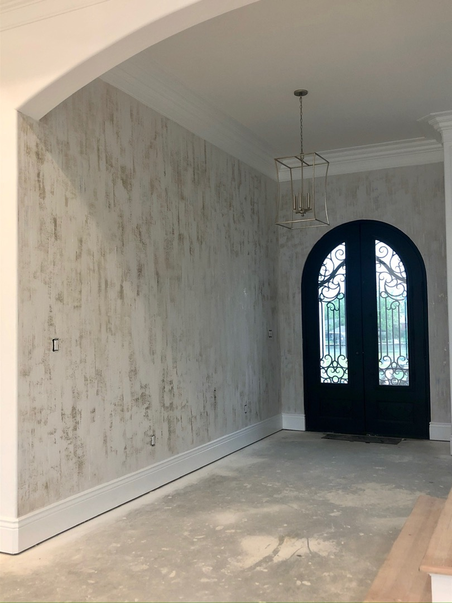
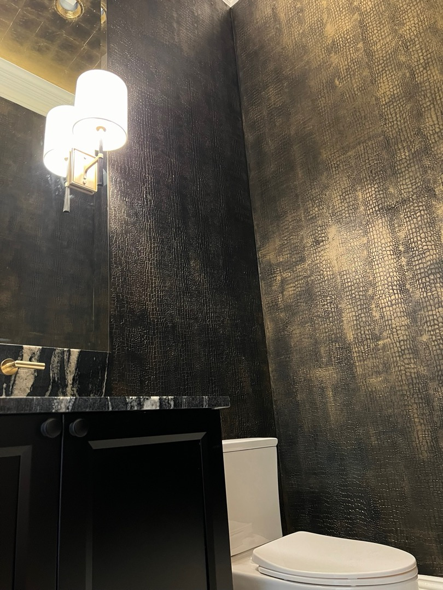
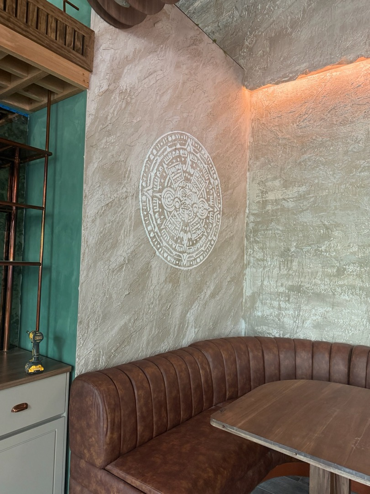

Wall Finishes
The Living
Wall
Faux finishing is a centuries-old craft, and Connie has spent forty years stretching what it can do — across sheetrock, plaster, canvas, stone, and nearly any surface that will hold a finish.

Wall Finishes · 01 / 05
Tested
by Hand
Drag, depth, and sheen are proven on sample boards first, so the finish that reaches your walls is already resolved.

Wall Finishes · 02 / 05
Quiet
Color
Tone moves softly across the surface — rich at midday, warmer by evening, and never flat.

Wall Finishes · 03 / 05
Made for
Living
Protective finishing systems keep every wall as beautiful years on as the day it was sealed.

Wall Finishes · 04 / 05
Depth
Under Light
The finish is judged at every hour — morning grey, afternoon gold, evening warmth — before it ever leaves the sample board.
Wall Finishes · 05 / 05
Surface
by Surface
Sheetrock, plaster, canvas, stone — Connie matches technique to substrate so the wall behaves as one cohesive plane.

Wall Finishes · Gallery
The full
collection
Tap any image to view it full size. Every work in this discipline, in one place.
18Works in this collection
Continue exploring
More from
the studio
Each discipline is a room in Connie's practice — murals, wall finishes, bas relief, cabinetry, ceilings, floors, and chinoiserie.